Table of Contents
Previous page
Music Genre Classification using Deep Learning
Literature Review, Apr. 3, 2019
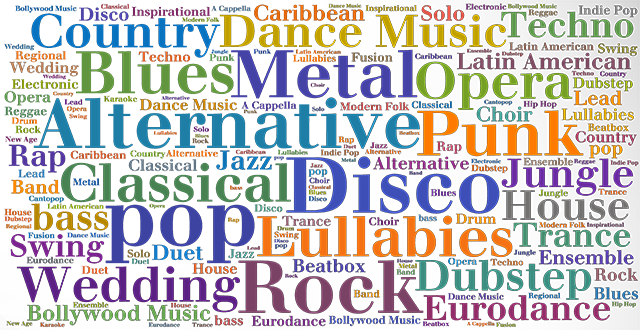Last term, in my Introduction to Machine Intelligence course, I completed a project involving music genre classification on raw audio, using a supervised (labelled) machine learning (ML) model. Traditionally, music genres are difficult to distinguish since genres are generally ill-defined, so it is a classic ML problem. When I researched for inspirations and clues on how to process the data and build the ML models, I came across the papers presented here. As my initial experimentations were unsuccessful, the processes described in these papers were essential for turning the raw audio (in mp3 format) into useful information by capturing data features. They also helped me develop a neural network (NN) that worked well on the processed audio data, which was able to achieve over 80% test accuracy. Each of these papers covered a complete ML workflow from pre-processing to training and results.
The first paper, written by Bahuleyan [1], discussed his proposed solution of training a music genre classifier. He started by using 10-second sound clips from each song used in the training data. This is important as audio data can become very large. Having too much data would be impractical. I took this advice in my project, which significantly shortened data processing time. Then, the article described multiple techniques of sound feature extraction. This would capture important details in the sound audio that would make it easier to distinguish between music genres. The article compared general techniques such as dropout, normalization, and time and frequency domain features. Based on the analysis here using a set of defined metrics, it concluded that taking the Mel-frequency cestrum coefficients (MFCC), a frequency-domain feature, is the most effective method. This was very helpful as I later used MFCCs in my project. The paper further presented different ML techniques used (both NNs and non-NN approaches), which were somewhat helpful for my project. However, it did not present any specific model structures he used. Overall, to me, this paper offers a great methodological approach in finding the best data pre-processing technique for audio.
The second paper, by Nasrullah and Zhao [2], presented the use of a convolutional recurrent neural network (CRNN) for music artist classification. First, it discussed pre-processing techniques for audio such MFCCs, which validated the research from the first article about its effectiveness. Yet, more emphasis was put on using spectrograms, a representation of frequency content over time. However, the most important takeaway from this paper is that a combination of convolutional neural networks (CNN) and recurrent neural networks (RNN) work well together to capture audio features. CNNs are good for frequency-domain features, while RNNs are good for any sequential data (along the time-domain). Therefore, the paper proposed the use of a CRNN to capture audio features from both time and frequency domains. It was even more helpful when it provided the neural network architecture used for this research, which gave me an idea of how to build my own NN. Overall, this paper validated some of the previous point made in the first paper regarding pre-processing techniques and provided more information on how to build the NN structure.
The third and final paper here by Oramas [3] is more advanced and extensive, where it covered the entire process from data representation to training and results, while bringing in a lot of new ideas not mentioned in previous articles. In data pre-processing and representation, aside from validating the techniques mentioned above (audio and visual representations for time and frequency-domain), it also offered text representation (from song lyrics), which gave me an alternative to only collecting audio data. The paper further discussed feature engineering that involved mathematical reduction of existing features, such as factorization. In the training section, the paper showcased both single-label and multi-label music genre classification. This is important since most music crosses between several genres, due to the ill-defined nature of music genres. It offered the possibility to classify songs under multiple genres, that would require slightly different neural network structures. These revised NNs were also presented in this paper. Finally, this paper talked about methods of qualitative analysis for classification error, such as confusion matrices and feature heat maps. This was useful for helping me formulate my own error analysis for the project. Overall, due to the extensiveness of this paper, I was able to learn significantly more about how to formulate my own music genre classifier, and offered me alternatives if the previous methods fail.
Overall, all three papers provided significant clues on how to build a working deep-learning model for music genre classification from raw audio. It discussed methods of data representation and pre-processing techniques, most importantly the effectiveness of MFCCs. They also gave insight on constructing the neural network, where I learned that using a combination of CNNs and RNNs (CRNNs) appears to be the most effective in capturing features from both the time and frequency domains. Finally, they talked about error analysis techniques. All the information gathered here were essential in helping me complete a successful project.
References
[1] Bahuleyan, H., 2018. Music Genre Classification using Machine Learning Techniques. University of Waterloo. DOI: https://arxiv.org/pdf/1804.01149.pdf
[2] Nasrullah, Z., Zhao, Y., 2019. Multimodal Deep Learning for Music Genres Classification. Department of Computer Science, University of Toronto. DOI: https://arxiv.org/pdf/1901.04555.pdf
[3] Oramas, S., Barbieri, F., Nieto, O. and Serra, X., 2018. Multimodal Deep Learning for Music Genre Classification. Transactions of the International Society for Music Information Retrieval, 1(1), pp.4–21. DOI: https://transactions.ismir.net/articles/10.5334/tismir.10/
Implications of AlphaZero and Boardgame AIs
Environmental Sustainability Paper, Jan. 11, 2019
In artificial intelligence, an important milestone is the ability for a computer program to learn to play a game. Google, one of the global leaders in artificial intelligence, created the program AlphaGo to play the game of Go, and more recently, developed AlphaZero to master multiple board games, including Go, chess, and shogi (Japanese chess) [1]. AlphaZero is claimed to be “extraordinarily” efficient and sets a benchmark for future artificial intelligence programs.
Compared to pre-existing AIs, AlphaZero significantly reduces energy use by decreasing the time spent training, and by using more energy-efficient technology. Other boardgame AIs learned the game through years of human gameplay, by mimicking the natural human experience of learning. AlphaZero, however, trains by itself through a process called self-play reinforcement learning, which played itself in iteration after iteration, honing its skills by trial and error [2]. The only inputs are the rules of each game. By playing with itself for thousands of times, it shortens the training time down to just a few hours, dramatically reducing energy consumption. Moreover, by using the latest energy-efficient hardware designed specifically for machine learning (such as TPUs, or tensor processing units), it further cuts down energy use. Although AlphaZero still uses much more energy compared to the human brain [1], the gap is quickly closing.
On the other hand, AlphaZero achieves extraordinary performance compared to other intelligence programs, which further demonstrates its efficiency. In the games of Go, chess, and shogi, it can outperform other AIs designed specifically for one board game, despite the dramatically shorter training time. In terms of energy use, as other AIs have different levels of energy consumption depending on the game, AlphaZero still averages out to use less energy [1].
Furthermore, AlphaZero lays out the foundation for building increasingly intelligent and energy-efficient AIs. This is not just applicable to learning human-designed games, but also in learning other human tasks. One limitation, however, is that all computer programs need to be created by humans and require some human “input” as a starting point of training, whether it is rules, guidelines, or data [1]. It is not yet considered true “intelligence” as AIs still mimic human behavior through these inputs and do not yet learn completely from self-exploration. Although AIs can outperform humans in some specialized tasks, there are still numerous tasks in this world where the “inputs” do not yet exist [1]. There is no need to worry that AIs will outsmart humans completely. Yet, the level of intelligence and efficiency in AIs today is sufficient to replace certain human tasks, which may exaggerate problems such as unemployment and the wealth gap.
AlphaZero is a lively demonstration that AIs are quickly improving, both in performance and efficiency. Although some environmental benefits still exist, such as reduced energy consumption and shorter training time, the implications it has on current AIs suggests that it has the ability to outperform humans in specialized tasks, thus can still replace humans in some areas.
References
[1] Wu, K. (2018). Google's New AI Is a Master of Games, but How Does It Compare to the Human Mind. [online] Smithsonian. Available at: https://www.smithsonianmag.com/innovation/google-ai-deepminds-alphazero-games-chess-andgo-180970981/ [Accessed 10 Jan. 2019].
[2] DeepMind. (2019). AlphaZero: Shedding new light on the grand games of chess, shogi and Go | DeepMind. [online] Available at: https://deepmind.com/blog/alphazero-shedding-new-lightgrand-games-chess-shogi-and-go/ [Accessed 10 Jan. 2019].
Are credit-ranking systems inherently unethical?
Ethical Analysis Paper, Nov. 7, 2018
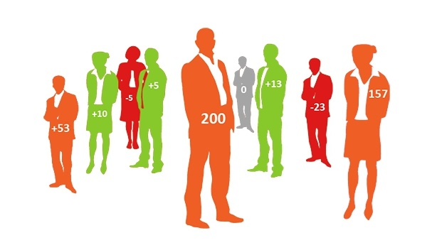In a world dominated by artificial intelligence, it is common for data-driven algorithms to replace human decision-making. However, it has been revealed that in many applications, the composition of data used by the algorithms can skew their decisions, thus marginalizing some under-represented or disadvantaged groups in the data. This results in unethical decisions being made that reinforces stereotypes and systematic discrimination.
One example is banks using algorithms to determine credit scores of individual borrowers when lending money. It is important since people often need to borrow money to make large purchases or start businesses. A lower credit score will prevent some from these opportunities to improve their standard of living, thus widening the economic gap [1]. Even though it is illegal to take race into account of credit, studies have shown that there is a great disparity in average credit scores between races [2]. This is mainly caused by factors used to determine credit scores, such as income, debt, family credit history, and location. These factors often reflect deep racial trends (for instance, poorer neighborhoods dominated by African Americans have lower income and higher debt), resulting in lower credit scores for these people [1]. These marginalized groups are thus given less opportunity to improve their situations (for instance, less loans to receive higher education or to start a business), which reinforces their marginalization. This results in a feedback loop that is systemically discriminating and widens the economic gap between groups.
Furthermore, based on the example of bank credit scores, it could be shown that all types of credit-ranking algorithms are inherently discriminatory and unethical. In some countries, in addition to collecting the information listed above, other information such as social media accounts, cellphone data, and work performance are collected [3]. They can also impact other areas in addition to taking loans. China’s infamous social credit system, for example, takes information including public behavior and internet activity into account, and can impact a person’s travel privileges and internet access [3]. In general, the more factors that an algorithm takes into calculating a person’s credit score, the more barriers it presents to certain groups from becoming unmarginalized. This then creates a greater obstacle from achieving social equality. By utilitarian ethics, this lack of equality in opportunity results in less overall benefit for the society by reinforcing these societal divisions and giving less freedom to the people [4]. Even though efforts are underway to reduce systemic discrimination in credit-ranking systems by making them government-run, the global shift towards a free market could undo these efforts [3].
Overall, the design of credit-ranking systems only strengthens existing stereotypes and bias between different social groups by considering factors that first created these differences. This design flaw makes it inherently unethical, by reducing overall freedom and equal access to opportunity for these marginalized groups. There are countless other examples where flawed data collection results in unjust decisions made by data-driven algorithms. As the world enters the age of machine intelligence, the possibilities presented in Black Mirror could become reality.
References
[1] "Are Credit Scores Racist? | Fiscal Tiger", Fiscal Tiger | A Resource for Personal Finance and Credit Card, 2018. [Online]. Available: https://www.fiscaltiger.com/are-credit-scores-racist/. [Accessed: 08- Nov- 2018].
[2] T. E. Holmes, "Credit card race, age, gender statistics", CreditCards.com, 2018. [Online]. Available: https://www.creditcards.com/credit-card-news/race-age-gender-statistics.php. [Accessed: 08- Nov- 2018].
[3] K. Waddell, "How Algorithms Can Bring Down Minorities' Credit Scores", The Atlantic, 2018. [Online]. Available: https://www.theatlantic.com/technology/archive/2016/12/how-algorithms-can-bring-down-minorities-credit-scores/509333/. [Accessed: 08- Nov- 2018].
[4] "Utilitarianism - Ethics Unwrapped", Ethics Unwrapped, 2018. [Online]. Available: https://ethicsunwrapped.utexas.edu/glossary/utilitarianism. [Accessed: 08- Nov- 2018].
The Missing Technological Link to Renewable Energy Systems
Technology Analysis, Dec. 4, 2017

The world is facing an energy crisis. According to Prof. Benjamin K. Sovacool, global energy shortages frequently result from regional conflicts or disasters that affect the supply of oil [1]. This is because many countries rely on the import of energy sources [1]. For the same reason, countries spend billions of dollars on energy each year importing oil [1]. Meanwhile, man-made climate change resulting from greenhouse gases produced by burning fossil fuels is also worsening. This causes problems such as increased severe weather and global sea level rise [2].
Many countries have been working to phase out fossil fuels by implementing renewable energy systems. Denmark, for example, has taken actions such as taxing fossil fuels, building clean energy infrastructure, and improving energy efficiency [1]. However, such operations are not feasible in many other areas around the world, especially in large, highly capitalist countries such as the United States. This is because it is challenging to decentralize energy distribution in a large country; and in a more capitalist system, the government has less control on market decisions compared to the consumers, so it is more difficult to make energy policies. Since renewable energy is more expensive than fossil fuels, and cannot meet the technical requirements, it is less desirable by the public. Thus, there is a need for improved renewable energy systems that can rival fossil fuels in terms of cost-efficiency and performance.
To analyze this issue, the actor-network theory is used. The larger "actor-network" represents the renewable energy system, and the "actors" are different aspects of it, such as an energy storage device. Each "actor" is composed of its own "entities" that interact with the "actor" in specific manners, and this form an "actor-world". For instance, a battery ("actor") has various physical and chemical properties ("entities") that determine its technical performance [3].
One of the crucial technological barriers is the lack of cheap, efficient, and small-scale energy storage. It is a key "actor" in the "actor network" of clean energy systems. Electricity storage is required for renewable energy systems today mainly because the energy sources are not consistent. Unlike fossil fuels, which generate a constant supply of electricity; wind, solar, hydro, and tidal power all have variabilities due to weather, geography, and other natural conditions [4]. In the "actor world" of a renewable energy grid, it would be difficult to balance the demand when supply "entities" are inconsistent, if there is nowhere for extra power to be stored, and nowhere to get power when supply is low. For example, in California, the solar power industry struggled with balancing the electricity supply and demand, which in some cases, it had to sell excess electricity to neighboring states as it had little storage to accommodate overgeneration [5]. Also, power storage is required for "entities" such as cars, ships, and planes, as well as individual homes that generate its own electricity from renewable sources. Therefore, to reduce the cost of clean energy and to allow for its greater implementation for replacing fossil fuels, a cost-efficient method of energy storage is needed in the "actor network".
Thus, electrical storage batteries are considered for this "actor" role. At present, however, battery technology is still limited. Most batteries today are lithium-ion cells; yet, it has some major flaws that make it unsuitable for the "actor" role. One of the limitations is its complex manufacturing process involving many small components [7], which significantly drives up its cost. Currently, even the best lithium ion batteries from Tesla, the Powerwall 2 and Powerpack 2, has a cost-efficiency of around $400/kWh commercially [8]; but according to MIT professor and battery expert Donald Sadoway, in order to compete with fossil fuels and replace them, the costefficiency needs to be $100/kWh or less [6]. Also, lithium ion batteries degrade significantly after repeated recharging. Most batteries today are only able to withstand 500-1000 chargedischarge cycles before their capacity falls drastically [9], but Sadoway believes that grid operation requires the batteries to be a lot more durable than that [6]. Furthermore, the capacity of most lithium ion batteries is only enough to serve as backup for short-term power shortages in the grid for a few hours, which is their primary use today [10]. Implementing it for full-scale electrical storage in a renewable energy grid would be far too expensive for consumers to use, or for nations to adopt. Therefore, the technological gap exists for the development of a low-cost and efficient battery to commercially replace fossil fuels.
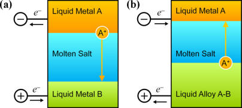One feasible technological solution is the liquid metal battery (LMB). Ambri, a company founded by Donald Sadoway, specializes in producing LMBs. By examining the "actor world" of Ambri and the LMB technology, it is obvious that LMBs could be fulfill the "actor" role of energy storage. According to Sadoway, LMBs can be easily manufactured since it uses inexpensive and "earth-abundant" materials [6], as well as a simple structure composed of just three layers (two liquid metal electrodes and one molten salt electrolyte in between) that separate themselves just by material properties [11]. Due to its simple composition, LMB cells can be easily scaled up in size without changing the chemical properties, unlike conventional lithium ion cells that are fixed in size options [7]. This way, a lower number of larger cells would need to be wired together when building a battery, which decreases the manufacturing complexity and cost. Sadoway has said that this design "takes advantage of the economies of scale inherent to electro-metallurgy and conventional manufacturing" [6]. Thus, all these "entities" of the LMB render it a lot cheaper compared to existing battery designs, in some cases, as low as $25/kWh (compared to ~$400/kWh for the best Tesla models [8]) [6]. This cost-efficiency clearly rivals fossil fuels, and raises more hope for renewable energy systems with batteries to phase out fossil fuels. In addition, the modular design of LMBs meant it can also be configured based on customer needs, such as for home use, transportation use, or industrial purposes [11]. Furthermore, LMBs are "unparalleled" in durability compared to other types of batteries due to the chemical reactions that take place during charging and discharging processes [11]. Sadoway claims that from testing results, LMBs can retain over 99% of its initial capacity after 10 years of daily cycling [6]. This also meets the demands of grid-level implementation. Thus, when placed in the "actor network" of the renewable energy system, the LMB has the potential to fulfill the "actor" role of a cost-efficient power storage device. It could be the missing technological link to renewable energy systems. Not only does it meet the technical requirements of energy storage, but it is also inexpensive enough to become a permanent replacement for fossil fuels.
If implemented, LMBs would drastically change the energy industry, and render the world more utilitarian. Due to its low cost and high performance compared to fossil fuels, consumers, especially those in the capitalist world, would be more inclined to use renewable energy. Amid the United States' withdrawal from the Paris Climate Accord due to economic concerns [12], LMB technology, combined with renewable energy systems, could provide the U.S. a feasible solution for it to take initiative on phasing out fossil fuels and reducing carbon emissions. Although the traditional energy industry may suffer from these changes, the general public would benefit from greatly benefit from lower energy costs, more independence on energy supply (instead of importing), and cleaner environment from reduction of carbon emissions. This is utilitarian, since it creates "greater happiness" for the "greater majority" [13]. Furthermore, the increased use of renewable energy made possible by LMBs would result in less regional or global energy shortages, and less conflicts related to energy resources [1]. This impact is also utilitarian. All these benefits associated with the LMB demonstrates that it fulfils the missing technological link to promoting renewable energy and phasing out fossil fuels.
A lot more technological, political, and economic progress still needs to be made before fossil fuels can be fully phased out by renewable energy. Yet, the liquid metal battery fulfills a key role of a cost-efficient and high-performance energy storage in the "actor network" of renewable energy systems. This is made possible by its special chemical properties and innovative design from Ambri, which makes the LMB better than fossil fuels in terms of performance and cost. When implemented, the LMB could have positive impacts on not only the energy consumers, but also for maintaining the world energy stability, and mitigating man-made climate change. The liquid metal battery is the missing technological link to renewable energy systems and replacing fossil fuels.
References
[1] Benjamin K. Sovacool. "Availability and Danish Energy Policy". Energy & Ethics, Justice and the Global Energy Challenge. [Print].
[2] "The Rising Cost of Natural Hazards: Feature Articles," NASA. [Online]. Available: https://earthobservatory.nasa.gov/Features/RisingCost/rising_cost5.php. [Accessed: 04-Dec-2017]
[3] Michael Callon. "The Sociology of an Actor Network: The Case of the Electric Vehicle". Mapping the Dynamics of Science and Technology. [Print].
[4] MIT (2015). The Future of Solar Energy. An Interdisciplinary MIT Study [online]. Energy Initiative Massachusetts Institute of Technology: 20. [Accessed: 04-Dec-2017]
[5] I. Penn, "California invested heavily in solar power. Now there's so much that other states are sometimes paid to take it," Los Angeles Times, 22-Jun-2017. [Online]. Available: http://www.latimes.com/projects/la-fi-electricity-solar/. [Accessed: 04-Dec-2017].
[6] Stanford Precourt Institute for Energy. Don Sadoway | Innovation in Stationary Electricity Storage: The Liquid Metal Battery. YouTube. 07-Nov-2016. [Online]. Available: https://www.youtube.com/watch?v=pDxegcZqx_8. [Accessed: 04-Dec-2017].
[7] D. Deng, "Li-ion batteries: basics, progress, and challenges," Energy Science & Engineering, pp. 385-418, Sep. 2015. [Online]. Available: http://onlinelibrary.wiley.com/doi/10.1002/ese3.95/full. [Accessed: 04-Dec-2017].
[8] F. Lambert. "Tesla Powerwall 2 has no competition - comparison with LG Resu and SonnenBatterie". Electrek, 31-Oct-2016. [Online]. Available: https://electrek.co/2016/10/31/tesla-powerwall-2-comparison-lg-resu-sonnenbatterie/. [Accessed: 04-Dec-2017].
[9] "Lithium Ion Battery Advantages & Disadvantages". Electronics Notes. [Online]. Available: https://www.electronics-notes.com/articles/electronic_components/battery-technology/li-ionlithium-ion-advantages-disadvantages.php. [Accessed: 04-Dec-2017].
[10] M. J. Coren, "Tesla just officially turned on one of the world's largest batteries". Quartz, 01-Dec-2017. [Online]. Available: https://qz.com/1144383/tesla-tsla-just-officially-turned-onone-of-the-worlds-largest-batteries-in-south-australia/. [Accessed: 04-Dec-2017].
[11] "Technology". Ambri. [Online]. Available: http://www.ambri.com/technology/. [Accessed: 04-Dec-2017].
[12] "U.S. withdrawal from the Paris Agreement: Reasons, impacts, and China's response," ScienceDirect, Sep. 2017. http://www.sciencedirect.com/science/article/pii/S1674927817301028 [Accessed: 04-Dec-2017].
[13] "Utilitarianism, Act and Rule". Internet Encyclopedia of Philosophy. [online] Retrieved from: http://www.iep.utm.edu/util-a-r/ [Accessed 03 Dec. 2017].
The Ethics of Solar Power Technology
Technology Ethical Analysis, Oct. 19, 2017

Every element of our industrialized world requires energy to function. For more than a century, the use of fossil fuels such as oil and coal has greatly shaped how society functions. As the world moves away from fossil fuels and nuclear power due to, the use of renewable energy, especially solar power, is on the rise. Solar power can also impact society in unthinkable ways, as every technology in the past did. These societal changes are inevitable since energy plays such a crucial role in people's lives. This essay examines how solar power technology is utilitarian as it does greater good and brings greater happiness for the public, and how it can also be communitarian as it promotes shared values and community over the control of the capitalist elite.
The first implication is that solar power is utilitarian. According to economist John Stuart Mill, utilitarianism is the belief that the purpose of ethics is to make society better by increasing things which can "bring greater good and happiness for the public" [1]. Solar power can achieve this since it allows people to be more self-sufficient, while helping some parts of the world develop. Unlike oil, hydroelectric, or nuclear power, solar power generation usually does not require a centralized plant, or a top-down distribution network controlled by a large organization. Means of solar power generation and electricity storage devices can be installed on individual homes and anything that can hold them, from streetlights to cars to smartphones. All these solar-powered units can operate independently from the power grid or external fuel like gasoline. Thus, widespread implementation of solar power would put significantly less demand on the power grid, centralized power generation, and fossil fuels. In addition, since solar-generated electricity is projected to become cheaper than the power grid in the coming years [5], even more people are likely to switch to over. Although large oil and utility companies may be driven out of business, the public would benefit from solar power by enjoying lower costs and achieving energy independence. People can worry less about power outages or shortages, their energy consumption, or paying hefty electricity and gasoline bills. This would bring more freedom, and greater happiness for the majority. Furthermore, the low cost and portability of solar power can benefit people in poor regions of the world with no access to any power sources. For example, in sub-Saharan Africa, where a majority of the population live without electricity [2]; installing solar power would provide the people there with a clean and inexpensive source of electricity. One startup called Off-Grid in Tanzania offers customers solar power kits with necessities including a solar panel, a battery, LED lights, a phone charger, a radio, and a flat-screen TV, for a price that the locals can afford. This allowed the people to access information and connect with the rest of the world [2]. Also, in Ghana, solar power allowed the vaccine for yellow fever to be safely stored, while letting residents to charge their cell phones at home rather than walking to a distant location to do so [2]. Solar power established connectivity in these societies, which helped them develop much faster, and brought greater good to the region. Thus, in a solar powered world, people become more self-sufficient; the greater good that solar power brings to society demonstrates that has a utilitarian ecology.
As people become more independent on energy with solar power, it leads to a second implication that solar power is communitarian. The idea of communitarianism emphasizes the "modes of conflict resolution that rely on shared values, customs, and traditions, without the exercise of power" [3]. Solar power can attain this by promoting community values over individual profit, while reshaping the condescending capitalist power structure into a more equal state. It has been predicted that once every household installs solar panels, the supply and demand of solar power will not be constant. It is dependent on the weather, the time of the day, as well as electrical usage patterns. To match the supply and demand, a power grid is still needed. However, its main role is to balance the supply and demand, not generating the power. Power companies would need to store excess electricity from the customers when there is high supply and low demand, and distribute it back to the consumers when there is low supply and high demand [4]. Therefore, instead of serving as the "overlooker" like is has always been, power companies now take a "mediator" role, while the current consumers become both the supplier and consumer. This creates an equal relationship between utility companies and households, which is a communitarian characteristic. On the other hand, when corporations and governments control electricity and oil, they are free to manipulate the price and distribution, often for corporal benefit or national interests. This is consistent with the capitalist society we have lived in, where the notion of profit stands above everything else. However, when electricity generation is on the hands of individuals, oil and utility companies lose the control they have on these people's lives, thus, putting more power on the public. Since electricity and gasoline are essential elements of daily life, changing their supply network with solar power can make a significant impact on the societal structure. Solar power could shift society towards a more mutually-supportive, or communitarian state, instead of the pyramid-like power structure in a capitalist economy.
More importantly, amid global climate change, a quick transition to solar power and other clean energy sources would be beneficial to all of mankind, by putting less pressure on our planet. Although the world is still deeply divided between fossil fuels and clean energy, it is a losing battle for the former. Currently, numerous nations including Britain, France, Germany, China, and India are coming together to put a ban on fossil fuels [6]. Meanwhile, nations such as the United States are being singled out from the global community for their self-centered energy policies, especially after the US withdrawal from the Paris Climate Accord. Also, the growing attention on Tesla for their products reflects what society is seeking. As fossil fuels encourage corporations to continue exploiting our planet for profit, solar power unites societies together to combat climate change and save the environment. It is clear that solar power promotes community values over individual benefit. Overall, from the technical, political, and environmental viewpoints, the various characteristics of solar power technology shows that it is communitarian in nature.
The world is only at the dawn of the solar-powered age. Communities entirely powered by solar energy are still in the planning phases, and have not yet been materialized [7]. Thus, the ecology of solar power technology will not be fully understood until it becomes a predominant part of society. However, from the arising evidence today on the impacts of solar power, it can be hypothesized that a solar-powered world will be more utilitarian as it allows people to be more self-sufficient than before, and will be more communitarian since it unites the individuals of society into communities that will weaken the capitalist power structure.
References
[1] "Utilitarianism, Act and Rule" | Internet Encyclopedia of Philosophy. [online] Retrieved from: http://www.iep.utm.edu/util-a-r/ [Accessed 16 Oct. 2017].
[2] Bill McKibben (2017). "The Race to Solar-Power Africa". [online] The New Yorker. Retrieved from: https://www.newyorker.com/magazine/2017/06/26/the-race-to-solar-powerafrica [Accessed 16 Oct. 2017].
[3] Mark B. Brown (2007). "Three Ways to Politicize Bioethics". [print]. The American Journal of Bioethics. Oct. 16, 2017. Pg. 46-47
[4] MIT (2015). The Future of Solar Energy. An Interdisciplinary MIT Study [online]. Energy Initiative Massachusetts Institute of Technology. Oct. 16, 2017. Pg. 20
[5] "Solar Power to Threaten Conventional Power By 2020" | OilPrice.com. [online] OilPrice.com. Available at: http://oilprice.com/Alternative-Energy/Solar-Energy/Solar-Power-To-Threaten-Conventional-Power-By-2020.html [Accessed 16 Oct. 2017].
[6] Petroff, A. (2017). "These countries want to ban gas and diesel cars" [online] CNN Money. Retrieved from: http://money.cnn.com/2017/09/11/autos/countries-banning-diesel-gascars/index.html [Accessed 16 Oct. 2017].
[7] Drake Landing Solar Community. [online]. Retrieved from: https://www.dlsc.ca/ [Accessed 16 Oct. 2017].
Personal Engineering Design Process
Personal Engineering Design Process Report, Feb. 24, 2017
Engineering design process is not the same for everyone. It can vary based on personal strengths, values, and preferences, as well as the team dynamics that someone is a part of. Based on my experiences in the Praxis course, particularly Praxis II, I developed my personal engineering design process roughly based on the Praxis model of engineering design process (Framing, Diverging, Converging, Representing; shown in figure below), but with a lot of modifications.
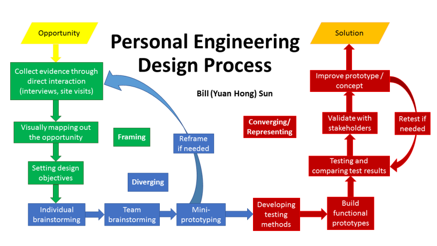Figure 1: Flowchart representation of my personal engineering process
To maximize my strengths of visualization, prototyping, and testing, as well as my value of designing for usability (functionality) and accessibility, my personal engineering design process emphasizes on visualizing the opportunity, building functional prototypes, and testing protocols. In addition, my current process allows for shift in phases (such as reframing, and retesting) to allow for more fluidity, or shift in phases, if one step does not go right. By using this process, I believe that not only I can gain the most from the design experience, but I can also maximize my contribution in a team setting.
To learn more about my design experiences and coursework in Praxis I and II, you can read about them here: Praxis I, Praxis II
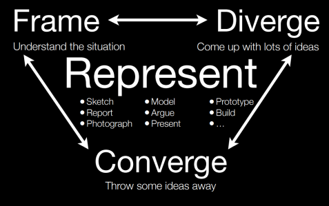Figure 2: Praxis model of engineering design process [1]
Framing
According to Design Engineering Manual, every engineering design process begins with some form of framing. The process of framing is to identify the tasks or objectives, establish the design functions, requirements, and specifications. [8]
In my personal engineering design process, I usually like to start framing the design opportunity by collecting evidence through direct engagement with the target community or the stakeholders. This usually involves site visits of the location/facility and interviews of the stakeholders in order to gain the most direct information. Secondary information would be obtained through research. All the information would be collected as "field notes", which serves the basis of understanding a community and any design opportunities present in that community. An example of my field notes from Praxis II can be found here [2].


Figure 3/4: Example of raw field notes taken from different site visits of the same location during the first phase of Praxis II [2]
The raw field notes are then analyzed to further understand the community or the opportunity. Since I prefer incorporating visuals, I would map out all the information using flowcharts or mind-maps, like the ones shown in Figure 5 and 6, by including all the information/research gathered.
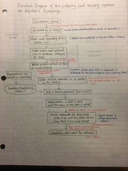 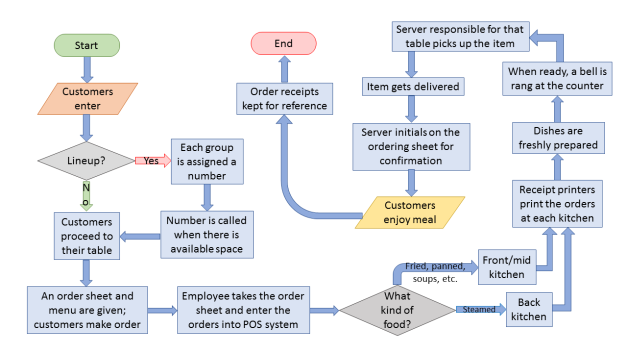Figure 5/6: Process flowcharts from the first phase of Praxis II that describes the customer service procedure at a Chinese restaurant [2][3]
From here, I am able to set design objectives that would cover the needs and wants of the stakeholders and resolve the issue. Again, when coming up with different objectives, metrics, criteria, and constraints, I like to connect them all together through visuals, as exemplified in Figure 7. This way, all the attributes can be connected back to the needs of the stakeholders and the high-level objectives. It is a way to ensure that the process stays on track and does not go off topic.

Figure 7: A mind map of all the design requirements and stakeholders from Phase 1 of Praxis II [3]
Diverging
Diverging is often needed in engineering design to generate a wide variety of ideas, and to prevent anchoring a specific idea.
My diverging process usually begins with a brainstorming session with my design team, as everyone can come up with unique design ideas. This usually involves taking a design brief, and in a certain amount of time, each team member should come up with a certain number of ideas (Figure 8). When it comes to individual brainstorming techniques, I prefer the Lotus Blossom Technique [4] as it is more simple to diverge from a general idea by adding various details. As shown in Figure 9, the technique begins with a keyword in the centre, and some general/baseline ideas. Each base design can then be diversified by adding specific details. This method usually generates a good number of ideas that ensures diversity and uniqueness.
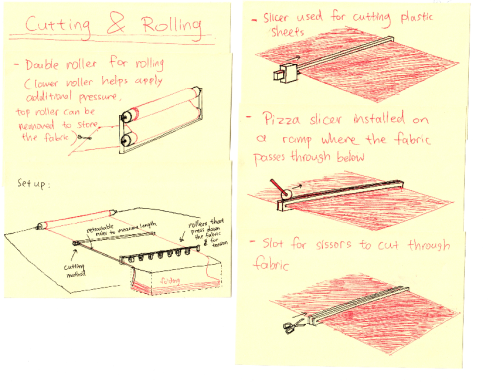
Figure 8 (Left): Some of my individual brainstorming ideas from a session in Phase 2, Praxis II; Figure 9 (Right): Visual representation of the Lotus Blossom Technique [5]
I then get together with my teammates and combine certain ideas, or modify some ideas based on other teammates' ideas. For this purpose, the Morph Chart (Figure 10) is a useful tool in which a basic idea can be extended or combined with other ideas to form more creative designs. Also, using the resources available, my team members and I build some mini, non-functional prototypes to demonstrate the concepts. All these activities help us visualize our ideas better.

Figure 10: Example of a Morph chart my team used to diversify ideas in Phase 2 of Praxis II
If my team and I run into problems during the diverging process, such as feeling very constrained by the design requirements, or feeling that the scope is too wide, we would go back and reframe the opportunity. This means going back to the basics, and doing more stakeholder interactions and research to redefine the problem and objectives. This happened during the beginning of the second phase of Praxis II , when my team felt that the scope of the opportunity presented in the Request for Proposal was too wide, so we decided to conduct our own site visits and background research, and finally chose to focus on one design aspect presented in the RFP instead of all three.
Converging / Representing
When it comes to converging ideas, I usually try to balance between System 1 (instinctive) and System 2 (logical reasoning) thinking. For System 2 thinking, this begins by developing testing protocols that go along with the metrics as outlined in the design brief. These testing procedures are usually rigorously developed based on existing standards, guidelines, and research papers. The protocols can either be carried out physically, or they can be easily justified based on research. An example of a testing protocol my team and I have developed in Phase 2 of Praxis II can be seen here.
On the other hand, as my team and I have done in Phase 2 of Praxis II, in order to have something that we can formally test on, my team and I spend time to build functional prototype(s). We believe that usability and functionality is more important than the processes used to reach a design decision. If time and resources are constrained, we would build proxy representations of certain aspects of each design that would normally be much more difficult to model. These proxy representations would serve the same function but are much simpler to construct.

Figure 11: A functional prototype developed for Phase 2 of Praxis II for Beta Release
We would then perform beta-tests on the prototype(s) to make sure that they meet the basic functionality requirements. After the functionality is met, we then decide on the more detailed aspects of design. We would use any materials that we can easily get access to instead of the actual materials proposed in the concept in order to save time and money. The testing protocols are then used to determine the quality of each design. This process was evident when my Praxis II Team chose the cradle of rollers and swivel arm with roller as the base design, tested for its functionality, and added rubber rollers and motors as further design details.

Figure 12: A functional prototype developed for Phase 2 of Praxis II for final Showcase. Notice the differences between this prototype and the final design concept (Fig. 15, 16, 17) as some parts of this prototype are proxies to how they are on the final design concept.
Finally, to summarize all the testing results and how each design idea performs on the metrics, a Pugh Chart (Figure 13) or Pairwise Comparison Matrix (Figure 14) is used. A numerical comparison can be made by adding up the scores of each alternative on the chart, however, the final decision cannot be based on just a score. Here, I would judge each design by further research, logical reasoning, and some instinctive thought.
 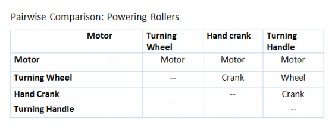
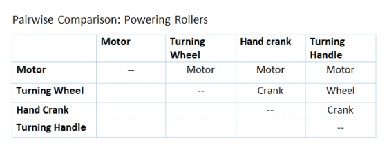
Figure 13/14: Examples of a Pugh Chart (Left) and Pairwise Comparison Matrix (Right) used in Phase 2 of Praxis II to converge ideas.
The best design is usually chosen as the one that best satisfies the needs and wants of the stakeholders, and best resolves the existing issue. This is done through validation with the stakeholders, which is the last major step on my engineering design process. Validation is done by interacting with the stakeholders and taking in their feedback on our design concepts. All the comparison charts and scores can only be seen as guidelines, not the basis for an absolute decision.
Every time after testing and validating, my team and I would make necessary improvements to the concepts, and then repeat the testing and validation procedures. Ideally, this would be continued until the design meets all the requirements and fully satisfies the needs of the stakeholders. Between Beta Release and Showcase of Phase 2, Praxis II, we repeated this process, where we completely changed up our original design after it did not work properly during our testing. We eventually came up with a much more improved design that is fully functional and validated (Figure 15, 16, 17). You can read more about our final design here.

Figure 15 (Top-left): Unrolling setup; Figure 16 (Top-right): Rolling setup; Figure 16 (Bottom): Oblique view. The design is drastically different compared to the design for Beta Release (Fig. 12)
Reflection
An engineering design process is never concrete. It is a constantly evolving process that changes from time to time, and from one iteration to another. Through the course of Praxis I and II, over two full iterations of the Praxis design model, my engineering design process has changed from the linear model of Frame, Diverge, Converge, and Represent after Praxis I to the process that I currently have, which allows for more fluidity and shift in phases when needed.
My current personal engineering design process is largely based on the experiences from Phase 2 of Praxis II, after my design team and I experienced multiple setbacks and changes in strategy. The fluidity of my current process allows more room for error and adjustment, which is often needed in successful engineering design as not all design processes go smoothly without issues. If my team and I had followed a more linear design process, the outcomes in Praxis II would have not been the same.
This current process also helps me maximize my strengths, such as visualization, prototyping, and testing, as these aspects are more emphasized in my process. I believe that by integrating these aspects into a team setting, I can contribute the most to teamwork. In my opinion, good teamwork is the ability to combine individual strengths of team members while maintaining a central team identity or value.
One aspect that I still need to work on is that I still tend to anchor on one particular design idea. I need to control my System 1 (instinct) and use more System 2 (logical reasoning) to compare the ideas. I should try to not get caught up on certain details that appear to be amazing and forget the big picture. Also, I should rely more on standards and guidelines to justify my ideas rather than using instinct.
Moving forward, I think it is important to look back every now and then, evaluate what I have done, identify the successes and areas of improvement in the way how I tackled a design problem, and make the necessary adjustments to my engineering design process. It is a constant learning process to know what processes works for me the best, and what aspects I am really good at. Then again, I am only a first year student engineer, and I have a lifelong journey ahead of me, where I will undoubtedly make changes to the elements of my design process. I hope that through experience and practice, I continue to grow as an engineer, and continue to make a difference in my community.
References
[1] J. Foster. "Lecture 8 Actual", Slide 39. ESC101. Sep. 2016.
[2] B. Sun, "Praxis II Field Notes: Improving Customer Service at Mother's Dumplings". Rep. Jan. 2017.
[3] G. Hoyes, G. Lu, Z. Thawer, B. Sun. "Request for Proposal: Improving the Efficiency of the Service System at Mother's Dumplings,". W12. Rep. Feb. 2017.
[4] G. Hoyes, G. Lu, Z. Thawer, B. Sun. "RFP G: Improving the Process of Preparing Fabric Orders at G&S Dye. TEST PLAN FOR PROTOTYPES". W12. Rep. Mar. 2017.
[5] A. Detta, A. Gulab, J. Guo, J. Mao. "IMPROVING THE PROCESS OF PREPARING FABRIC ORDERS. REQUEST FOR PROPOSAL". W9. Rep. Mar. 2017.
[6] "Brainstorm Technique: Lotus Blossom," Andy Eklund, 08-Oct-2014. [Online]. Available: http://www.andyeklund.com/brainstorm-technique-lotus-blossom/. [Accessed: 24-Feb-2017].
[7] G. Hoyes, G. Lu, Z. Thawer, B. Sun. "The Cradle: An Automated Fabric Roller for G & S Dye". W12. Rep. Mar. 2017.
[8] Mike Tooley. Design Engineering Manual. Oxford, UK: Elsevier, 2010. pg 27-35
Can Artificial Intelligence Win the Traffic Game?
Engineering Science Education Conference (ESEC) Lecture Extension, Jan. 30, 2017
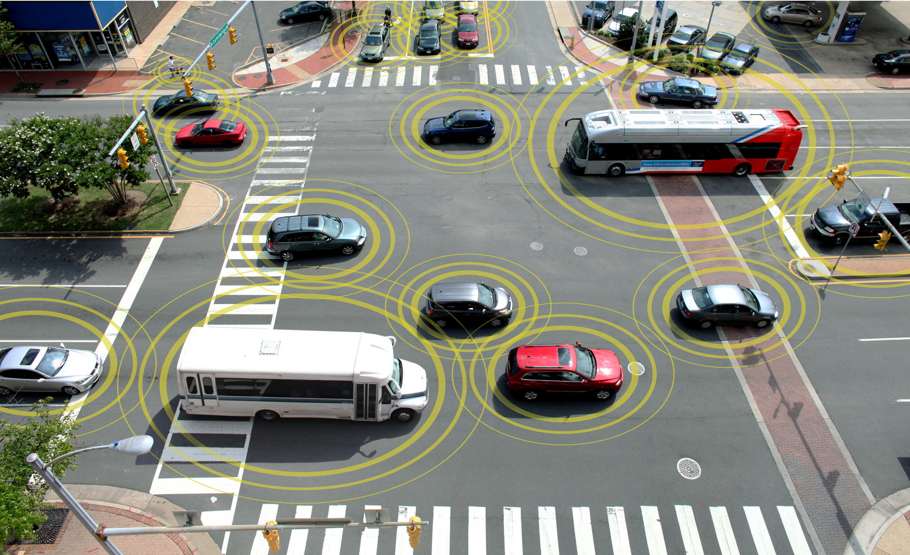As a commuter student, spending 2 hours a day going through the traffic in Toronto is a part of my daily life. Since my schedule is tight, I am quite bothered by traffic jams and public transit delays that increase my commute time. Moreover, thousands of Torontonians and people living in other major cities must feel the same. As a result, I am looking forward to any possibilities that can reduce traffic congestion in urban areas.
The very first lecture at ESEC immediately caught my attention when I learned that artificial intelligence can be applied to manage traffic. In the lecture, Professor Baher Abdulhai, the director of Toronto Intelligent Transportation Systems Centre and Testbed [1], discussed about his research and the projects he is working on with the city of Toronto. He applies machine learning and AI to elements of the traffic grid, including traffic lights, signs, and buses. Through machine learning, the elements of the traffic grid can adapt to real-time conditions and allow maximum flow of traffic in each direction. It also prioritizes buses and streetcars over cars since they carry more people. Moreover, in the coming years, when autonomous vehicles are integrated into the system, they can communicate with each other and with the traffic grid elements to maximize the flow of traffic. His test results on a computer simulation of the Toronto road grid have shown that his intelligent transportation system has significantly reduced travel times compared to now.
Prof. Abdulhai suggests that the main goal of AI is to spread the traffic out in time, space, and transportation mode, so congestion can be decreased. While most people would not understand, controlling the amount of traffic entering the system is crucial to reducing congestion. When the roads exceed their design capacity, the amount of traffic that can pass through at a given time noticeably decreases. By keeping the roads at below its maximum capacity, a steady flow of traffic can be ensured.
Furthermore, there has recently been a huge debate in Toronto on the tolls on Don Valley Parkway and Gardiner Expressway. While Mayor John Tory announced that a permanent toll should be charged at all times [2], Prof. Abdulhai showed us with his research that a time-based tolling system should be implemented instead. With a permanent toll, he demonstrated in his simulation that it will cause traffic backups in the main streets parallel to the highways because most cars will try to avoid it. This, in return, worsens the congestion. However, with a time-based tolling system (with higher tolls charged at busier time intervals), it will cause commuters to travel earlier or later, or use other modes of transportation instead of driving. This relieves the system at peak travel times.
There are still plenty of research to be done in this field, such as modelling the modes of transportation that people uses, the behaviour of pedestrians, and determining the optimal times of the day for different kinds of workers to commute.
References[1] "Baher Abdulhai," University of Toronto Transportation Research Institute. [Online]. Available: http://uttri.utoronto.ca/people/baher-abdulhai/ . [Accessed: 20-Feb-2017].
[2] Pagliaro, "Mayor Tory's road toll pitch praised as bold move," thestar.com, 24-Nov-2016.
[Online].
Available:
https://www.thestar.com/news/city_hall/2016/11/24/john-tory-speech-on-road-tolls-for-gardiner-expressway-don-valley-parkway.html
. [Accessed: 20-Feb-2017].
An Application of Engineering Thinking in Daily Life - Choice of Workout Location
Engineering Design Decision, Nov. 16, 2016

1. Introduction
1.1. Background
In first year university, "Freshmen 15" is a widespread phenomenon since students are often stressed out from increased schoolwork and other duties; and in addition to their poor eating and sleeping habits, weight gain is common [10]. As a former competitive swimmer and runner, I did not want to gain any "freshmen pounds". I decided that first year EngSci should not be an excuse to be out of shape. Thus, I continued working out regularly.
There are at least 4 different locations that I go for workout. This includes Hart House, Athletic Centre, and Goldring Centre on the St. George Campus, as well as the Sheppard YMCA, which is close to home.Usually, my comprehensive dryland and swimming workouts requires the use of various equipment ranging from rowing machines to squat racks and bar bells, as well as a running track. As a commuter student, I need to save time by minimizing commute and waiting time for equipment.
Left to right: Hart House, Athletic Centre, Goldring Centre, Sheppard YMCA


1.2. Purpose/Goals
I need to choose a permanent workout location instead of going between all 4 places. The goal is to minimize wasted time and spend as little money as possible, while being able to do full body dryland workouts, as well as swimming workouts.
1.3. Stakeholders
1. Myself*2. Other people who come with me for workout
3. Workers at each location
4. People who work-out at each location
5. My parents
6. My classmates, profs, and TAs
(*Main stakeholders)
2. Requirements
2.1. Objectives
2.1.1. High-Level Objectives
1. Waste as little time as possible; don't interfere with class/homework/family time (S1, S4, S5, S6)2. Reduce cost as much as possible (S1, S5)
3. Maximize workouts (both swim and dryland) to stay fit (S1)
2.1.2. Detailed Objectives
1. Reduce or eliminate waiting time for equipment, at the pool, etc. (HLO1)2. Reduce commute time to the location from class/home (HLO1)
3. Open during hours that I am free of class, homework, and other duties (HLO1)
4. Reduce or eliminate cost of entrance, membership, or services (HLO2)
5. Variety in equipment for different types of workouts and full body workouts (HLO3)
6. A proper swimming pool that is not crowded (HLO3, HLO1)
7. Services that improve overall convenience and efficiency (HLO1)
2.2. Metrics
Colour Code:| Unacceptable | Satisfactory | Good | Excellent |
|---|
1. Hours of operation (DO3)
| Open only during the day (9 AM-6 PM); closed on early mornings / late nights / weekends | Open on early mornings (at least 7 AM) or late nights (at least till 11 PM) on some days of the week | Open on early mornings (at least 7 AM) and late nights (at least till 11 PM) daily | Open earlier than 6 AM and later than 12 PM daily; or open 24/7 |
2. Entrance cost (DO4): Admittance fee or membership fee; length and frequency of free time periods
3. Walking time and distance from my class/home (DO2): Estimated by Google Maps; use either Bahen Centre (BA) or my house as starting location. [9]
4. Congestion at each location (DO1): Measured by the average waiting time of any equipment, as well as the availability of equipment.
| Average waiting time for an equipment >= 5mins; equipment usually full | Have to share equipment with others; average waiting time 1-5mins | Do not have to share equipment with others; no waiting time | Location usually empty; equipment usually available |
5. Variety of equipment offered (DO5): List of all equipment offered
| No swimming pool or running track; does not have bar bells and plates (cannot have machines and dumbbells only); does not have mats and a stretching area | 25m or yard swimming pool; outdoor running track; provides bar bells in addition to circuit machines, cardio machines and dumbbells; provides mats and a stretching area | Indoor running track; provides rowing machines and a separate stretching room in addition to the "satisfactory" requirements | 50m pool; provides all the equipment mentioned earlier |
6. Condition of swimming pool, if applicable (DO6): length, hours, and congestion of the pool
| Shorter than 25m or yards; not open during times that I am free; no divided lanes or average more than 10 swimmers per lane | 25m or yards long; open early mornings/late nights on selected days of the week; divided lanes; average 6-10 swimmers per lane | 25 or 50m long; open early mornings/late nights daily; avg. 3-5 swimmers per lane; lanes divided by speed category | 50m long; open early mornings/late nights daily; avg. less than 3 swimmers per lane; fast swimmers |
7. Services offered (DO7): List of essential services provided
| No towel service; no free lockers; no lost and found service | Towel service; free lockers provided; lost and found service provided | Free towel service; locker room; phone chargers; cafeteria /convenience store | Personal trainers available on-site in addition to everything in the "good" category |
2.3. Constraints
1. Must be open on early mornings and late nights from Mon-Fri; must be open on weekends (M1)2. Must be free to enter at all times (although a T-Card may be used) (M2)
3. Average walking time from class/home must not exceed 10 minutes (M3)
4. Must have a track for running, a proper swimming pool (defined in M6), as well as bar bells (M5)
5. Average waiting time for equipment cannot exceed 5 minutes (M4)
2.4. Criteria
1. Prefer more flexibility in time (M1)2. Prefer to have a mixed variety of equipment (not quantity, but variety) (M5)
3. Prefer as little congestion as possible (M4, M6)
4. Prefer better condition for the pool, if applicable (M6)
5. Prefer more services to be offered (M7)
3. Evaluation of Choices
| Metric | Hart House | Athletic Centre | Goldring Centre | Sheppard YMCA |
|---|---|---|---|---|
| 1. Hours of operation | 7am-11pm Mon-Fri; 7am-9pm weekends | 7am-11pm Mon-Fri; 9am-5pm weekends | 7am-11pm daily | 4am-1am daily |
| 2. Entrance cost | Free with T-card | Free with T-card | Free with T-card | Not free; free Sat. evenings only |
| 3. Walking time/ distance [9] | 8mins/650m from BA | 7mins/550m from BA | 12mins/950m from BA | 20mins/1600m from home |
| 4. Congestion at each location* | Mild congestion; short wait times | No wait time for most equipment | No wait time for most equipment | Mild congestion; short wait times |
| 5. Variety of equipment offered | 25-yard pool; indoor track | 50m pool; indoor track | No swimming pool; no track | 25m pool; indoor track |
| 6. Condition of swimming pool (if applicable)* | Divided lanes; lanes somewhat crowded | Lanes divided by speed category; 50m pool open at specific times | N/A | Lanes divided by speed category; sometimes crowded |
| 7. Services offered | No cafeteria/ convenience store | Convenience store; on-site trainers | No cafeteria/ convenience store; on-site trainers | Convenience store; on-site trainers |
| Overall Rating | Satisfactory | Good | Unacceptable | Unacceptable |
| Personal Comments | The facility is old and usually crowded | Better if it is open for longer hours on weekends | No swimming pool or track; long commute | Long commute; membership costs $39 per month |
Most of the information is based on the official website of each location [1] [2] [3] [4], as well as information found from online reviews of each location [5] [6] [7] [8].
*Some information here is based on personal observations on-site.
4. Recommendation and Suggestions
Athletic Centre is recommended since it has the most variety of equipment and relatively low congestion. It best fits with my high-level objectives of saving time, saving money, and maximizing workouts, as well as most of my detailed objectives and metrics. Personally, AC is also preferred because a lot of my classmates also go there for workout; thus, I get the chance to socialize and exercise at the same time. Most of my classmates here told me that AC is by far the best choice of workout location on campus. Also, based on online reviews, AC has received generally positive feedback. [5] [6] [7] [8]
Athletic Centre could have been better overall if it is open for extended hours on weekends, giving me more flexibility in choosing the time for workouts.
References
[1] Athletic Centre official website: http://www.physical.utoronto.ca/facilitiesandmemberships/athletic_centre.aspx
[2] Hart House official website: http://harthouse.ca/fitness/
[3] Goldring Centre official website: http://www.physical.utoronto.ca/FacilitiesAndMemberships/goldring-centre-for-high-performance-sport.aspx
[4] Sheppard YMCA official website: https://ymcagta.org/find-a-y/toronto-sheppard-ave-ymca-centre
[5] YELP online feedback-U of T Athletic Centre: https://www.yelp.ca/biz/university-of-toronto-athletic-centre-toronto
[6] YELP online feedback-Hart House: https://www.yelp.ca/biz/hart-house-toronto (scroll down for gym reviews)
[7] YELP online feedback-Goldring Centre: https://www.yelp.ca/biz/goldring-centre-for-high-performance-sport-toronto
[8] YELP online feedback-Sheppard YMCA: https://www.yelp.ca/biz/ymca-north-york-2?osq=sheppard+ymca
[9] Google Maps: https://www.google.ca/maps
[10] "How to reduce the 'freshmen 15' weight gain". (2008, April). Women in Higher Education, 17(4), 27. Retrieved from http://go.galegroup.com.myaccess.library.utoronto.ca/ps/i.do?p=AONE&sw=w&u=utoronto_main&v=2.1&it=r&id=GALE%7CA178220717&asid=2b39874187596ff5a784dcf150ac3e95
Design for X Walkabout - The Improved Design of iPhone 7/7+ for Durability
Design for X Walkabout Report, Oct. 25, 2016

There has been a lot of controversy surrounding the design of the latest iPhone 7 and 7-Plus, especially with the removal of earphone jacks and the redesign of the home button. However, when I recently visited an Apple store and closely observed the features of iPhone 7 and 7-Plus, and then comparing it to previous iPhone generations (5s, 6, 6s, etc.), I realized that the design of iPhone 7 generation makes them more durable compared to previous models. These changes in design, including the removal of earphone jacks, the redesign of buttons and the home button, as well as the changes in the outer casing, render the iPhone 7 and 7-Plus more resistant to water and dust; thus, iPhone 7 generation is designed for greater durability.

Fig. 1: comparison of iPhone 7 and iPhone 6s from the bottom
The unconventional decision to remove the earphone jacks and the reset hole on the iPhone 7 can be seen as an effort to increase its resistance against water and dust [4], improving its overall durability. Most smartphones prior to the iPhone 7/7-Plus are not designed to be water-repellant. There are lots of cracks and holes on the phone where water can easily enter, damaging its interior components. However, most other smartphones (especially Google, Android phones) are designed in a way that it can be easily opened up to access its interior. This allows the user to quickly dry and repair the interior in case of water damage. On the other hand, iPhones and other Apple mobile devices are not designed to be as accessible, which a special tool set is required to open up the device and access its interior. As a result, they become more challenging and costly to repair. By removing the earphone jacks and the reset hole on the iPhone 7/7-Plus, there are less channels for water to enter the interior of the device. Under the current design, there is a much lower risk of water damage to the interior components. According to waterproof tests conducted on the iPhone 7/7-Plus, it received a rating of IP67 under IEC Standard 60529 [1]. According to IEC 60529, IP67 means that the iPhone 7 is "totally dust-resistant", and "capable of surviving temporary immersion up to 1 meter for 30 minutes in pure water" [1][2]. Even though it has been tested that iPhone 7/7-Plus is not totally waterproof, its ability to resist water and dust to this degree is a major improvement from previous smartphones. Therefore, the design decision to be water and dust-resistant is a great factor for its design for durability.
An additional feature that make the iPhone 7 and 7-Plus more durable than previous iPhone generations is the redesign of the home button. Up until now, all the previous iPhone generations have used a conventional mechanical home button. The iPhone 7/7-Plus uses a solid-state, capacitive touch navigation home button along with a vibrator motor [4]. Unlike the traditional mechanical home button, which breaks down easily after heavy usage, the capacitive touch home button does not require force to be triggered (from observation during my Apple store visit). This makes it less likely to be broken from heavy usage. More importantly, the iPhone 7's home button is in one solid state with the phone itself, unlike previous generations where the home button is a separate piece. This improves the durability since it is less likely for dust to settle in the cracks, or for water to enter the interior of the phone through the cracks surrounding the button [3]. It is another feature that improves the water and dust resistance of the phone. The design of the home buttons is a significant improvement of the iPhone 7's durability.
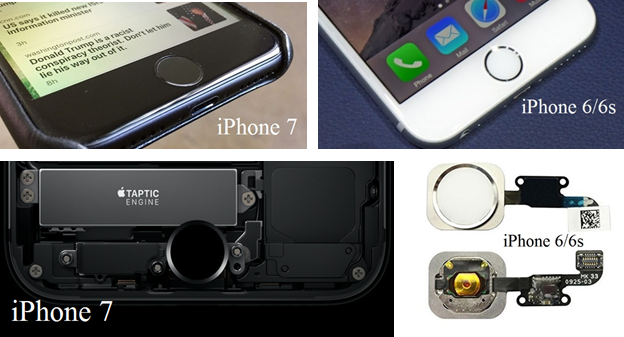Fig. 2: Comparison of the home button between iPhone 7 and 6/6s
Another minor detail I noticed during observation is that iPhone 7/7-Plus have their camera lenses protected by the cover around it. This feature makes the camera lenses more durable to potential fall damage or impact, as well as water and dust. As shown in Fig. 3, previous generations of iPhones, including iPhone 6/6s, have their camera lenses exposed, surrounded only by a metal ring structure. Even though the metal ring structure offers a degree of protection, the camera lens is still vulnerable to fall impact, as well as water and dust leaking inside. The design of the iPhone 7/7-Plus better protects the camera lenses from these problems. Overall, these design features make the iPhone 7/7-Plus much more durable than other smartphones.
Fig. 3: Comparison of camera lens
In summary, even though the design of iPhone 7/7-Plus may seem unconventional and controversial compared to other iPhones and smartphones, many of its design decisions are made so that the iPhone 7/7-Plus are more durable, and more resistant to dust and water. They may also be intended to improve the usability and accessibility of the phone. Despite the downsides to these design decisions, including the increased cost of manufacturing, maintenance, and repair, such design decisions can be a fair trade-off. Furthermore, the design of iPhone 7/7-Plus can lead to future developments such as water repellent smartphones, better wireless earplugs, and wireless charging technologies. Thus, the iPhone 7 generation can be seen as a significant technological upgrade on smartphones.
References[1] Kingsley-Hughes, A. (2016, September 12). "Stop calling the iPhone 7 'waterproof'. It isn't" | ZDNet. Web. Retrieved from http://www.zdnet.com/article/the-iphone-7-is-not-waterproof/
[2] Vincent, J. (2016, September 07). "The iPhone 7's new home button isn't a real button" - The Verge.Web. Retrieved from http://www.theverge.com/circuitbreaker/2016/9/7/12828652/apple-iphone-7-home-button-removed-force-touch
[3] Official Apple Website on the iPhone 7/7-Plus: http://www.apple.com/ca/iphone-7/?afid=p238%7Csme1EonIJ-dc_mtid_20925xpb40345_pcrid_137844055435_&cid=wwa-ca-kwgo-iphone-slid-
Praxis I Lecture Extension - Use Wikipedia for Research?
Lecture Extension Report, Sep. 29, 2016

During the Praxis lecture on Monday, September 26th, we briefly discussed the idea of using Wikipedia for research. According to the lecture, Wikipedia is a good source if one is looking for basic information; it is a "stepping stone" for progressing into more advanced research (e.g. the links/references provided under each article). However, since Wikipedia articles can be edited by anyone, it may be useful in certain subjects, but most of the time its credibility is low. Therefore, I decided to take a look into Wikipedia rules, guidelines, and policies, as well as Wikipedia articles from a few different subject areas. I would then apply CRAAP tests to see for which subject areas Wikipedia articles are more credible.
In order to find out more about Wikipedia's policies and standards, I first went to their "List of Policies" page, where all kinds of policies are listed, including content, conduct, deletion, enforcement, legal, and procedural policies. As I went through the list, some of the policies caught my attention: 1. Neutral point of view; 2. No original research; 3. "Any unsourced material may be challenged and removed"; 4. "Don't worry about leaving them imperfect" when editing; 5. Consensus is needed to resolve issues [1]. Here, it is clear that Wikipedia has set some rules to at least make their articles seem credible; however, these rules are not strictly enforced, which means Wikipedia articles can still vary in quality. Since Wikipedia articles can be written or edited by anyone, the articles may still contain outdated information, bias, or they may have been posted by someone who is not an expert in the field or by someone who purposely provides false information. I specifically looked into the "Editing Policy" page, and some of the wording here seems striking. For example, the page describes that "Perfection is not required: Wikipedia is a work in progress" and that "Even the best articles should not be considered complete" [2]. In other words, Wikipedia articles do not have to be complete since other editors can build on the work that has already been done on an article. Also, Wikipedia articles for certain subjects of interest may be more reliable than others. This inconsistency in information is not a good sign for those researching using Wikipedia.
According to the lecture, Wikipedia articles for engineering related subjects are of poor quality. I decided to look up Wikipedia articles on subjects related to engineering design: Engineering Design Process, Design for X, and Design for Manufacturability. As I scanned through the articles, I see a lot of red flags: "This article may require cleanup to meet Wikipedia's quality standards", "This article needs additional citations for verification", "This section is incomplete". Furthermore, these labels have been there since as early as 2009. It is clear that these articles not only failed to meet Wikipedia standards, but also they have not been properly edited for a long time. Also, when I scanned through the content of each article, I notice that some of the information is off-topic. For example, in "Design for Manufacturability", after a short intro, the subsections contain "Design for manufacturability for printed circuit boards", "Design for manufacturability for integrated circuits", and "Design for manufacturability for CNC machining". These subsections seem completely irrelevant given the context of the article; and not only that, the information under each section seems to be plagiarized from a different source in loose pieces, as it appears loose and disconnected. Finally, when I checked the links provided below, many of the links are either currently defunct or missing. Overall, these three articles failed the CRAAP test and are not reliable references for research.
From the lecture, I also heard that Wikipedia articles for computer science related subjects are more consistent. I looked up some articles in this field: Quantum Computing and Internet of Things. Although there are some hiccups here and there labelled by Wikipedia, both articles are much longer and more detailed compared to the previous articles. To get a sense of how current the information is in these articles, I looked at the edit history of both articles, which showed that major edits have been done to both articles within the last 3 months. Such topics need to be frequently updated to keep up with the latest information possible. Scanning through both articles, there is not an obvious section in either article that is off topic or irrelevant. Also, most of the links provided below can be opened, with a lot of the references being official sources (.edu, .gov, .org, or research papers). The only flaw in both articles is that they both contain a lot of complex language and jargon that may not be understood by the average reader. Yet, both articles give a decent overview of the subject, and are much more reliable compared to the previous ones I have read. These articles are a good place to begin a research.
From this quick activity, it can be seen that Wikipedia articles vary in consistency. Depending on the subject, some articles may be more reliable than others. Even though Wikipedia has a set of guidelines and policies of how the articles should be written, edited, and cited, they are not strictly enforced or followed, and this results in the lack of reliability. It may be a good idea to start a research using Wikipedia articles, since they provide an introduction and basic information about the subject, as well as links to other resources that might be useful. Yet, simply citing Wikipedia is far from adequate.
References[1] Wikipedia: List of policies. (n.d.). Retrieved September 29, 2016, from https://en.wikipedia.org/wiki/Wikipedia:List_of_policies
[2] Wikipedia: Editing policy. (n.d.). Retrieved September 29, 2016, from https://en.wikipedia.org/wiki/Wikipedia:Editing_policy
[3] Harvard Guide to Using Sources. (n.d.). Retrieved September 29, 2016, from http://isites.harvard.edu/icb/icb.do?keyword=k70847